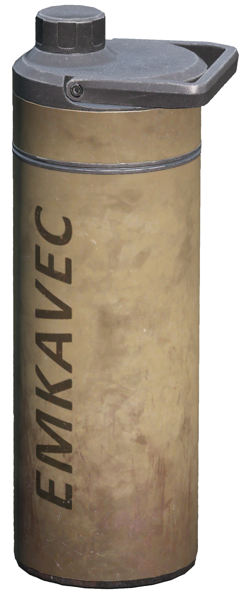
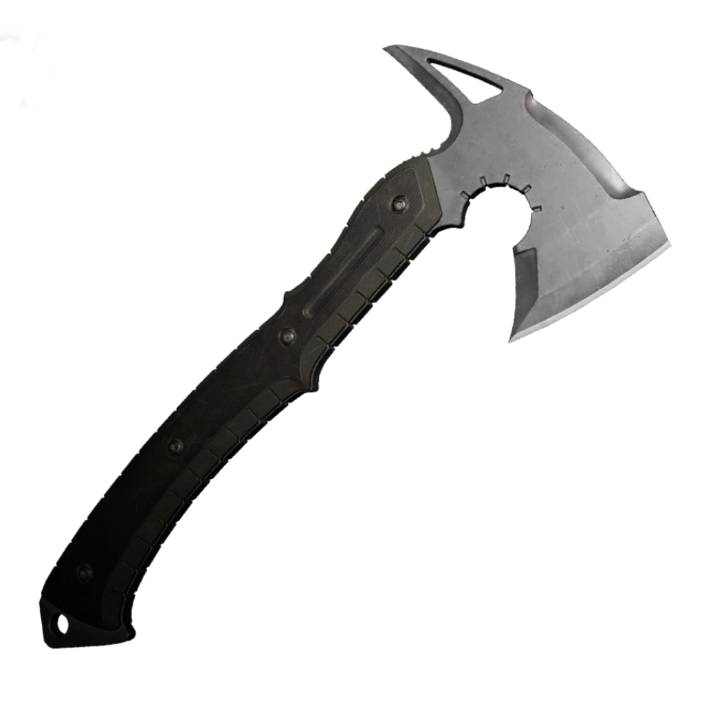
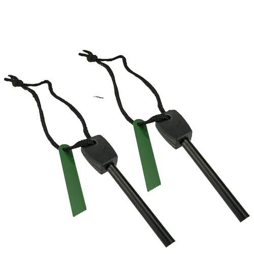
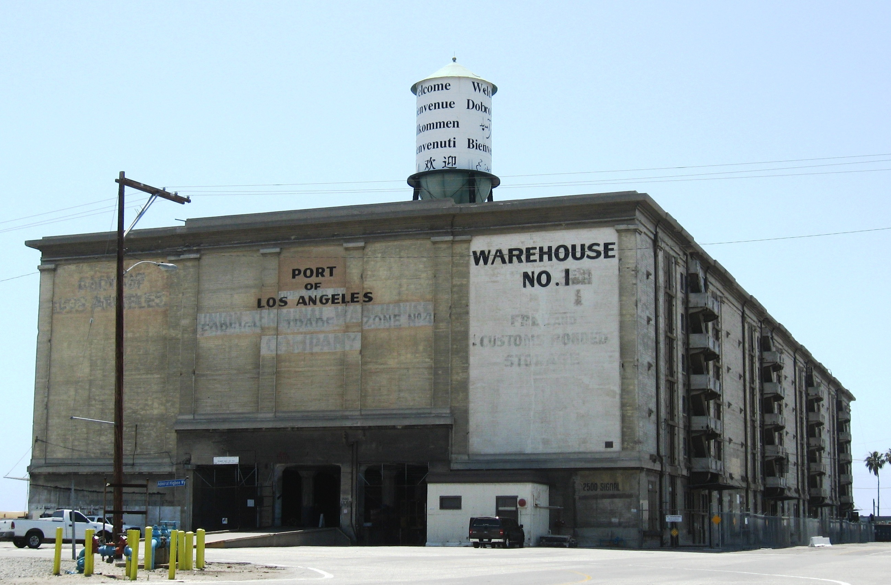

Water Filtering Bottle
Can be extremely useful if you need to purify water from contaminated sources. Especially when the cities plumbing system shuts down!
So it seems that your worst fear has come true! Zombies are real, and they seem to have taken over your city. How will you survive the big city crawling with zombies? Well look no further! This guide will help fight off those pesky flesh-eaters and keep you from joining them!
Fighting the hordes of the undead might seem like and easy and fun task, but it's not worth it. Being sneaky and staying hidden helps you keep off the zombies radar.
Public places are where everyone else is going, your supermarkets, gas stations, hardware stores, etc. And since these places are going to be crowded with people, zombies will be drawn to them. Keep clear of these places until inital outbreak subsides. Sure not much will still be there. But it's safer than getting the food with a massive horde around.
While it's best to avoid confrontation with zombies, you may not always have that option. Learning how to defend yourself with available weapons and tools can be the difference between life and death.

Can be extremely useful if you need to purify water from contaminated sources. Especially when the cities plumbing system shuts down!

A hatchet is a versatile tool that can be used for chopping wood, building shelters, and defending yourself against zombies. Make sure to keep it sharp and ready for action.

A reliable fire starter is crucial for warmth, cooking, and signaling for help. Keep it in a waterproof container and test it regularly.

While everybody who hasn't yet turned in flesh-eating zombies is scrambling towards their local walmart in hopes it hasen't been scavenged, you will be making your way to the other "safer" side of town. Specifically the industrial district. Sure it might come off as a rough spot to live, but that's what everyone else will be thinking. A relativley low-density area is perfect for a safe area for you to reside in. Think about it, a warehouse would be perfect, most would have tools lying around in crates that you can use to fortify and protect your new home!
If you had to choose a weapon to use during a zombie outbreak, what would it be?